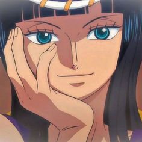
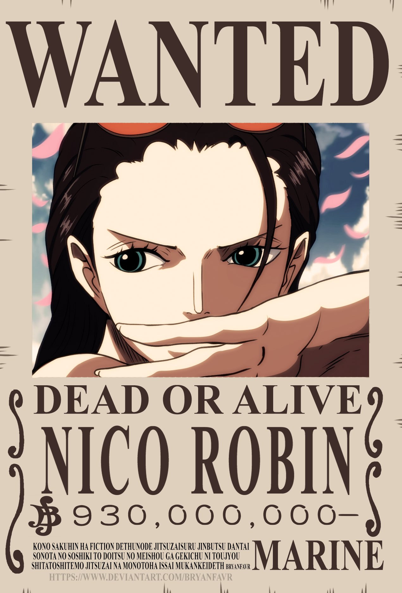
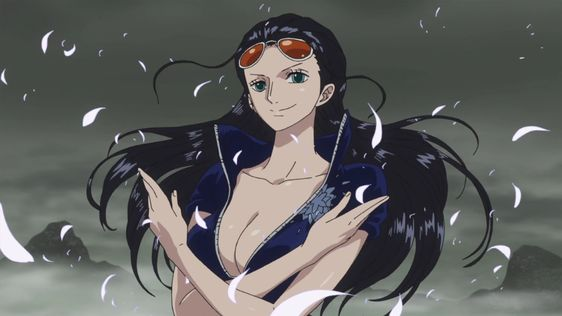
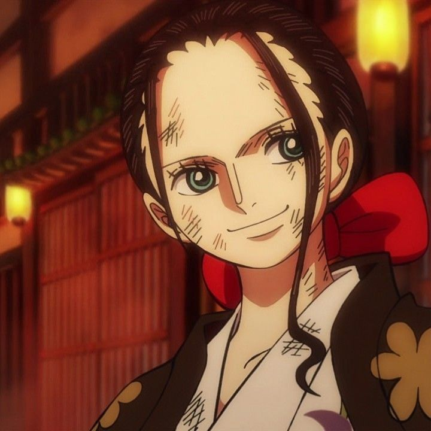

Nico Robin

{kind=link}
También conocida como "Robin-chan" o "La Niña Demonio", es un personaje importante en la serie One Piece y una miembro valiosa de los Piratas del Sombrero de Paja. Es una arqueóloga buscada por sus conocimientos sobre la historia antigua y los Poneglyphs, unas inscripciones misteriosas que contienen información sobre el "Siglo Vacío". Robin es conocida por su apariencia distintiva, con largos cabellos oscuros y una mirada seria y penetrante. Tiene una personalidad tranquila, inteligente y reservada, y es reconocida por su sabiduría y conocimiento enciclopédico sobre el pasado del mundo de One Piece.

{kind=link}
Desde una edad temprana, Robin ha sido perseguida por el Gobierno Mundial debido a sus habilidades y conocimientos arqueológicos. A pesar de su trágico pasado y su reputación como criminal, Robin se une a los Piratas del Sombrero de Paja después de que Luffy la salva y le ofrece protección y amistad. Las habilidades de Robin se centran en su capacidad de leer y descifrar los Poneglyphs, que son piedras históricas que revelan información crucial sobre el pasado del mundo. Además, Robin tiene la capacidad de duplicar partes de su cuerpo gracias a haber comido la Fruta del Diablo Hana Hana no Mi, lo que le permite extender sus extremidades y atacar a distancia.

{kind=link}
Robin aporta una perspectiva histórica y estratégica a la tripulación de los Piratas del Sombrero de Paja. Utiliza su conocimiento para ayudar en la búsqueda del One Piece y comprender mejor la historia y los misterios del mundo en el que viven. Además, Robin demuestra habilidades de combate excepcionales, siendo capaz de derrotar a oponentes poderosos con su técnica de lucha única. A lo largo de la serie, Robin experimenta un crecimiento personal y encuentra un sentido de pertenencia y amistad en los Piratas del Sombrero de Paja. Aunque inicialmente es una persona reservada y desconfiada debido a su pasado, su relación con la tripulación la transforma en una persona más abierta y dispuesta a confiar y luchar por sus compañeros. Nico Robin es una arqueóloga buscada con habilidades únicas y un conocimiento profundo de la historia antigua en One Piece. Su sabiduría, inteligencia estratégica y habilidades de combate la convierten en un valioso miembro de los Piratas del Sombrero de Paja, aportando una perspectiva única y contribuyendo al progreso de la tripulación en su búsqueda del One Piece.

{kind=link}